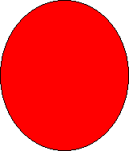

title: Scaling Shapes description: Scaling Shapes ms.assetid: fe975ebd-9b27-409d-a7c2-ac5ee08d1d4f keywords:
This topic describes VML, a feature that is deprecated as of Windows Internet Explorer 9. Webpages and applications that rely on VML should be migrated to SVG or other widely supported standards.
[!Note]
As of December 2011, this topic has been archived. As a result, it is no longer actively maintained. For more information, see Archived Content. For information, recommendations, and guidance regarding the current version of Windows Internet Explorer, see Internet Explorer Developer Center.
Â
You've learned how to draw and color shapes on a Web page using VML. In this topic, we will illustrate how to scale shapes to any size you want.
VML uses the same syntax defined in the Visual Rendering Model Details section of the CSS2 specification to specify the size of the containing box so that the contents of a shape will be rendered (drawn) within the containing box. You can use the width and height style attributes to define the size of the containing box.
For example, if you draw an oval and specify style='width:75pt;height:100pt', the oval will be drawn within a containing box at a size of 75 points (width) by 100 points (height), as shown in the following picture:
<v:oval style='width:75pt;height:100pt'
fillcolor="red" />
If you change the size to style='width:120pt;height:140pt', the oval becomes larger because it is scaled within the new containing box at a size of 120 points (width) by 140 points (height), as shown in the following picture:

<v:oval style='width:120pt;height:140pt'
fillcolor="red" />
If you change the size to style='width:60pt;height:40pt', the oval becomes smaller because it is scaled within the new containing box at a size of 60 points (width) by 40 points (height), as shown in the following picture:
<v:oval style='width:60pt;height:40pt'
fillcolor="red" />
Â
Â